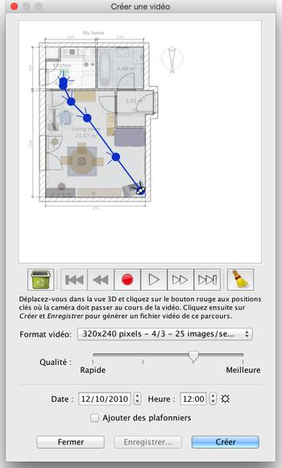

| Création de vidéos | |||
Pour créer une vidéo 3D du logement, choisissez le menu Vue 3D > Créer une vidéo... ou cliquez sur l'outil Créer une vidéo.
Ceci provoquera l'affichage d'une boîte de dialogue similaire à celle dédiée à la création de photos.  En haut de ce panneau, apparaît le plan de votre logement par
dessus lequel le chemin virtuel de la caméra vidéo sera
dessiné. Sous ce plan, les boutons d'enregistrement, de lecture
et de suppression vous permettent d'enregistrer les points par lesquels
le chemin de la caméra doivent passer, rejouer le chemin enregistré
ou supprimer des points du chemin. Pour créer une vidéo, placez-vous à la position
de départ de la caméra vidéo dans la vue 3D de
la fenêtre principale de Sweet Home 3D, puis cliquez sur le bouton
rouge d'enregistrement dans le panneau de création de vidéo.
Déplacez-vous ensuite dans la vue 3D vers la position suivante
de la caméra vidéo puis cliquez à nouveau sur le
bouton rouge. Répétez ainsi de suite l'opération
pour chaque position par laquelle la caméra doit passer. |
|